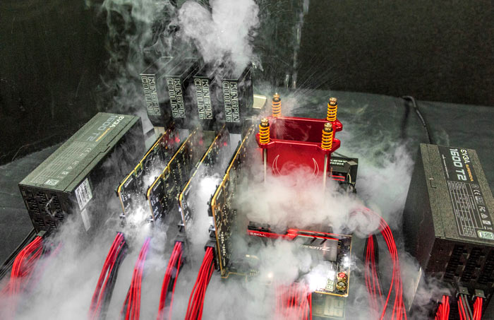

Di Posting Oleh komang adi pradana wiratama

Tips dan Trick Membeli Laptop Yang Cocok Sesuai Kebutuhann !!
Membeli laptop dengan harga terjangkau, spesifikasi sesuai dengan kebutuhan, dan kualitas baik merupakan pertimbangan awal sebelum memutuskan untuk membeli laptop. Yang terpenting adalah menyesuaikan kapasitas laptop sesuai tujuan dan.....
Selengkapnya →
Di Posting Oleh Komang adi pradana wiratama

Cara Overclock Laptop Gaming Kamuu !!
Istilah overclock mungkin sudah cukup familiar di telinga kalian. Solusi ideal ini biasa dilakukan para gamer untuk melampiaskan keinginannya menambah performa PC saat gaming tanpa harus menguras biaya. Tips overclock yang seharujuga bukan perkara sulit, tetapi bisa memberikan risiko yang dapat menyebabkan kerusakan pada...
Selengkapnya →